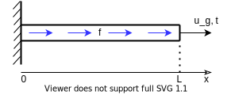

Дифференциальные уравнения и математические модели
Одномерные линейные эллиптические дифференциальные уравнения
Рассмотрим постановку задачи решения линейного одномерного эллиптического дифференциального уравнения.
Модели механики сплошной среды, которые описывает данный тип уравнений:
Статика упругой среды;
Стационарная теплопроводность;
Стационарная массовая диффузия.
Будем рассматривать постановку задачи в терминах статики упругой среды.
Представим одномерную балку длиной \(L\). Один конец балки зафиксирован (перемещение равно нулю), а второй может:
быть перемещен на величину \(u_g\) (given);
испытывать реакцию \(t\) (вектор нормальных напряжений).
По длине балки распределена нагрузка \(f\) - вектор плотности объемных сил (в случае гравитационных сил: \(f(x) = \rho(x) * g\), где \(\rho(x)\) - плотность тела, \(g\) - ускорение свободного падения).
{kind=link}
Постановка задачи одномерной статики упругой среды:
Необходимо найти поле перемещений \(u(x)\), которое является отображением из \((0, L)\) в \(\mathbb{R}^1\) при том, что известны:
\(u_0\);
\(u_g\) или \(t\);
\(f\);
определяющие соотношения среды: \(\sigma = E \frac{\partial u}{\partial x}\),
удовлетворяющее уравнению статики упругой среды:
c граничными условиями:
\(u(0) = u_0\);
\(u(L) = u_g\) или \(\sigma(L) = t\).
Граничные условия
В курсе лабораторных рассматриваются только два типа граничных условий:
Граничные условия Дирихле (1-го рода, условие на значение): \(u(0) = u_0\) и \(u(L) = u_g\);
Граничные условия Неймана (2-го рода, условие на значение производной): \(\sigma(L) = t \implies E \left.\frac{\partial u}{\partial x}\right|_{x=L} = t\).
Определяющие соотношения среды
Уравнение статики упругой среды записано относительно поля напряжений \(\sigma\). Решение данного уравнения возможно как относительно поля напряжений, так и относительно поля перемещений. При разработке вычислительных методов решения первичным полем чаще всего выбирают поле перемещений.
Для связи поля напряжений и перемещений служат определяющие соотношения среды. Данные соотношения задают модель материала среды.
Определяющие соотношения изотропной упругой среды с модулем Юнга (физическая константа) \(E\):
После подстановки определяющих соотношений в уравнение статики получаем эллиптический вид дифференциального уравнения:
Уравнения стационарной теплопроводности и диффузии
Эллиптические уравнения также являются моделью для стационарной теплопроводности и массовой диффузии.
Таблица с аналогиями физических величин и соотношений:
Модель |
Поле типа «потенциал» |
Поле типа «поток» |
Константы определяющих соотношений |
|---|---|---|---|
Статика упругой среды |
Перемещения \(u\) |
Напряжения \(\sigma\) |
Модуль Юнга \(E\) |
Стационарная теплопроводность |
Температура \(T\) |
Плотность теплового потока \(q\) |
Коэффициент теплопроводности \(\lambda\) |
Стационарная массовая диффузия |
Масса \(m\) |
Плотность потока массы \(q\) |
Коэффициент диффузии \(D\) |
Двумерные линейные эллиптические дифференциальные уравнения скалярного переменного
Рассмотрим постановку задачи решения линейного двумерного эллиптического дифференциального уравнения скалярного переменного.
Модели механики сплошной среды, которые описывает данный тип уравнений:
Стационарная теплопроводность;
Стационарная массовая диффузия.
Будем рассматривать постановку задачи в терминах стационарной теплопроводности.
Представим двумерную область \(\Omega\) с границей \(\partial \Omega\). На части границы \(\partial \Omega_T\) задана температура \(T_g\), а на части границы \(\partial \Omega_q\) (\(\partial \Omega_T \cap \partial \Omega_q = \emptyset\); \(\partial \Omega = \partial \Omega_T \cup \partial \Omega_q\)) задан поток температуры \(q_n\) в направлении нормали \(\vec{n}\).
В области распределены источники тепла с объемной плотностью теплового потока \(\vec{f}(x)\).
{kind=link}
Постановка задачи двумерной теплопроводности:
Необходимо найти поле температур \(T(x)\), которое является отображением из \(\Omega\) в \(\mathbb{R}^1\) при том, что известны:
\(T_g\) - заданная температура;
\(q_n\) - заданный тепловой поток в нормальном направлении;
\(f\) - плотность источников теплового потока в \(\Omega\);
определяющие соотношения среды: \(\vec{q} = - \hat{\lambda} \nabla T\),
удовлетворяющее уравнению стационарной теплопроводности:
c граничными условиями:
\(T = T_g, \vec{x} \in \partial \Omega_T\) - граничные условия Дирихле;
\(-\vec{q} \cdot \vec{n} = q_n, \vec{x} \in \partial \Omega_q\) - граничные условия Неймана.
Определяющие соотношения среды
В задаче теплопроводности определяющие соотношения связывают вектор теплового потока \(\vec{q}\) и градиент температуры \(\nabla T\):
где \(\hat{\lambda}=\begin{bmatrix} \lambda_{11} & \lambda_{12} \\ \lambda_{21} & \lambda_{22} \end{bmatrix}\) - тензор теплопроводности.
Будем рассматривать изотропные материалы. В этом случае тензор теплопроводности принимает вид:
Подставив данное выражение в уравнение стационарной теплопроводности получим: